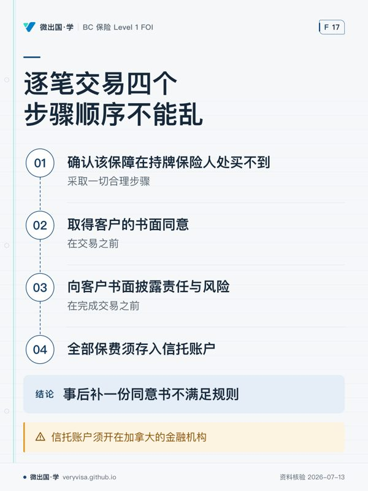

监管方的 Level 1 胜任力框架要求你能「定义无牌保险人，并说明适用的要求与限制」。 这块内容考试口径几乎没有，而它在实务里出现的频率比想象中高—— 凡是本地市场不肯接的风险（某些高危行业、特殊物业、新兴业务）， 最后都可能走到这条路上。
先把最容易搞错的一句钉死：
✕
「无牌」不等于「非法」
BC 的规则不是「禁止跟无牌保险人打交道」，而是 「原则禁止 ＋ 开一个口 ＋ 在这个口上加满程序」。 把它记成「不能碰」，你会在客户真的需要时不知所措； 记成「可以随便碰」，你会踩上牌照风险。 正确的记法是：一条被开了口的禁令。
一 · 制度设计：禁令、口子、程序，三层叠起来
BC 这块规则由两个机构、两套文件共同构成，缺一半都答不全：
| 层 | 出自 | 管什么 | 违反的后果 |
|---|---|---|---|
| ① 禁令 | 《Financial Institutions Act》s.75 | 谁可以在 BC 经营保险业务 | 违法经营（BCFSA 一侧） |
| ② 口子 | 同法 s.76(1)(c)(d) | 什么情况下可以例外 | —（这是授权条款） |
| ③ 程序 | Insurance Council Rules 7(11.1) | 持牌人做这件事时要走哪几步 | 牌照（Council 一侧） |
s.75 的原文形态是「不得……除非」：一个人不得在 BC 经营保险业务， 除非他属于列明的九类之一——持有 business authorization 的保险公司或 省外保险法团、依《Insurance (Captive Company) Act》注册的公司、 已获准的互惠交易所成员、依 Part 6 Division 2 持牌的保险代理／销售员／ 理赔人（且仅以该身份经营）、存款保险机构、 以及被点名的 Insurance Corporation of British Columbia……等等。
ℹ️
顺带记一条：ICBC 的法律地位写在 s.75(e) 里
ICBC 与加拿大存款保险公司并列出现在这份「不受一般授权要求约束」的名单上。 这是「ICBC 不是一家普通保险公司」这句常识的法条出处。
s.76 是那个口子。 它写的是「Despite section 75……」， 然后给出五种例外。对我们最重要的是 (c) 和 (d)：
- (c)：一名依 Part 6 Division 2 持牌的 insurance agent、 且获该 BC 居民授权去订立该合同的， 可以为该居民与一家被 s.75 禁止的保险人之间安排保险合同， 并受法规规定的要求与条件约束。
- (d)：在同一情形下，该保险人无需 business authorization 即可订立该合同。
⚠️
(c) 的主语是 agent，不是 salesperson
这是本讲最容易被略过、也最可能出考题的一处。 法条把这条通道给的是保险代理（agent）， 不是 Level 1 的保险销售员（salesperson）。
落到实务上：你不是这条通道的主体， 你是在持牌代理／代理行的授权下参与。 Council Rules 那一侧的表述正好呼应—— 若你所属代理行已完成事前报备，你个人可以免于再报。 两句话说的是同一件事的两面。
二 · 底层逻辑：规则为什么不是「禁止」，而是「留痕 ＋ 转移」
想清楚客户面对的是什么，规则的形状就自然了。
无牌保险人不受 BC 监管：BCFSA 不审它的偿付能力， 不管它的市场行为；它也不进 PACICC 之类的保障机制 ——真倒了，BC 这边没有兜底。
所以监管者面对的是一个两难：
- 一刀切禁止 → 本地市场接不了的风险就彻底没保障， 客户要么裸奔，要么把生意搬走。
- 完全放开 → 客户以为自己买了保险，出险时才发现对方在地球另一端、 电话打不通、这里也没人管得着。
BC 选的是第三条：允许，但把风险明明白白地转移到客户身上，并且留下痕迹。
看 Rules 7(11.1) 要求披露的三项，正好一一对应客户会遭遇的三种坏事：
| 要求披露的 | 对应的坏事 |
|---|---|
| 该保险人的财务实力或信用状况 | 它可能赔不起 |
| 理赔不获赔付或该保险人停业时客户能做什么、后果是什么 | 它可能跑掉，而这里没人管 |
| 保费税须由客户自行承担 | 账单上会多一笔他没预期的钱 |
理解了这一层，四个步骤的顺序就不用死背了—— 它们是「先证明没别的选择，再让客户知情同意，最后把钱看住」。
三 · 现行政策：完整的合规链，事前一次 ＋ 逐笔四步
事前（一次性）
须提前以 Council 认可的表格向 Insurance Council 提交书面通知。 若你是某代理行的授权代表、而该代理行已完成此项报备，你个人可豁免。
逐笔（每一笔交易，顺序不能乱）
- 采取一切合理步骤，确认该保障在持牌保险人处买不到；
- 在交易之前取得客户的书面同意；
- 在完成交易之前向客户书面披露与无牌保险人打交道的责任与风险， 至少含上表那三项；
- 所收全部保费须存入在加拿大金融机构开立的信托账户。
法条一侧另加的两条义务（Council Rules 里没有，只有 FIA 有）
- s.76(2) 记录义务：依 (1)(c) 安排此类合同的 agent， 必须保存该合同细节的记录，并应所得税专员或superintendent 的要求提交。
- s.76(3)(4)(5) 保险人来查勘的前提：那家无牌保险人若要来 BC 做查勘、定损或估价，须三件齐备—— 依《Insurance Premium Tax Act》s.4 的保费税已缴、 该保险人已通知 superintendent、且 superintendent 已书面批准。 批准在指定期间内涵盖所有必要的查勘与定损， 且保险人违法时可被中止、撤销或拒发。
⚠️
三个高频陷阱，一次记全
① 顺序本身是考点。 三个动作的时点分开写死： 确认买不到 → 事前书面同意 → 完成交易之前书面披露。 「事后补一份同意书」不满足规则。
② 保费税是客户自付。 常见干扰项写成「代理行代缴」——原文是客户付。
③ 信托账户的地点有要求。 是在加拿大的金融机构， 不是「任何一家银行」，也不是保险人所在地的银行。
ℹ️
两个机构各管一段，别混
BCFSA（superintendent 那一侧）管的是「谁能在 BC 经营保险业务」， 以及无牌保险人来查勘要不要批。 Insurance Council 管的是「持牌人做这件事时要走哪些步骤」。 同一笔交易，两个机构各管一段，违反的后果也不一样： 前者是违法经营，后者是你的牌照。
四 · 历史与边界：这条规则想防的到底是什么
保险业最古老的跨境问题就是这个：风险在本地，钱在境外，监管管不着。 省级监管的整个体系建立在「你要在这里做生意，就要在这里被看住」之上—— business authorization 就是这句话的形式化。
无牌保险人绕开的正是这一环。所以规则的重心 不在「它是不是一家好公司」（那是客户和市场的判断）， 而在「谁来承担它不受监管这件事的后果」。
答案是：在充分告知之后，由客户承担。 而你的职责是让那个「充分告知」真实发生，并且留下可以事后检验的痕迹。
🔧
这块内容和「合适性」是一体两面
第 1 步「确认在持牌保险人处买不到」不是走过场。 它同时在回答一个更基本的问题：这真的是客户最好的选择吗？ 如果本地有一家持牌保险人肯接、只是贵一点， 那么走无牌这条路就很难说是为客户着想。 把「买不到」做实，是这一整条链里唯一一步真正需要你专业判断的动作。
五 · 案例：一份本地接不了的仓储责任险
场景：客户在偏远地区经营一座木结构冷藏仓库， 上一年出过一次电气火灾。你问遍本地市场，四家全部拒保， 第五家开出一个客户负担不起的条件。有人告诉你， 某家不在 BC 持牌的境外保险人愿意接。
按顺序走：
- 先把「买不到」做实并留痕：四家拒保的书面回复、 第五家的报价单、你询过哪些市场、什么时候询的。 这一步做不实，后面全部无效。
- 确认由谁来做：这条通道属于持牌 agent／代理行。 你要做的是把材料备齐、走内部流程， 确认代理行事前已向 Council 报备（没报就先报）。
- 书面同意在交易之前拿到——不是口头答应、不是邮件里一句「行吧」， 是一份客户签字的书面同意。
- 成交之前做书面披露，三项都要写到： 那家保险人的财务实力／信用状况；理赔被拒或它停业时客户能做什么、 后果是什么；保费税由客户自付。
- 保费进加拿大境内金融机构的信托账户。
- 保存合同细节记录——所得税专员或 superintendent 可以来要。
一年后出险，对方拒赔。 客户来找你。 此时决定你处境的，不是那家保险人赔不赔， 而是第 3、4 步的那两份文件在不在。 在，你做的是一次合规的、客户知情的安排； 不在，你面对的是一次牌照层面的问题。
六 · 两个口径
这一块考试口径与实务口径罕见地一致——两边都按现行的 FIA 与 Council Rules， 因为考试口径根本没讲这块，不存在「考试口径过时」的分流问题。
要注意的分流在主语上：
- 考试：问「无牌保险人的定义与限制」时，答 s.75 的禁令 ＋ s.76 的例外 ＋ Rules 7(11.1) 的四步程序。
- 实务：真办这件事时，记住通道属于 agent／代理行， Level 1 销售员是在授权下参与，且别忘了 FIA 那两条 Council Rules 里没有的义务 （记录义务、查勘前置条件）。
术语对照
| 中文 | 英文 | 一句话 |
|---|---|---|
| 无牌／未获授权保险人 | unauthorized insurer / unlicensed insurer | 未获准在 BC 经营保险业务的保险人 |
| 经营授权 | business authorization | 在 BC 合法经营保险业务的那张许可 |
| 保险专员 | superintendent（BCFSA） | 管保险人一侧：授权、偿付能力、市场行为 |
| 事前书面通知 | prior written notice to Council | 一次性，代理行报过则个人可免 |
| 书面同意 | written consent | 必须在交易之前取得 |
| 书面披露 | written disclosure | 必须在完成交易之前做，三项内容写死 |
| 信托账户 | trust account | 须开在加拿大的金融机构 |
| 保费税 | premium tax | 由客户自行承担，不是代理行代缴 |
| 自保公司 | captive company | s.75(b) 的另一条例外通道 |
| 互惠交易所 | reciprocal exchange | s.75(c) 的例外，须持有 s.187 许可 |
自查五问
- 「无牌保险人」的准确定义是什么？ 为什么说「无牌不等于非法」？
- s.76(1)(c) 那条通道的主语是谁？ Level 1 销售员在其中是什么位置？
- 逐笔四步的顺序是什么？ 哪一步最常被做成走过场，为什么它最重要？
- 保费税由谁承担？保费存进哪里？
- 同一笔无牌保险人交易，BCFSA 和 Insurance Council 各管哪一段？违反的后果分别是什么？
本板块题库现有 110 题，其中练习池 50 题、模考专属池 60 题。
延伸：你这张牌照的边界 第五节是同一条合规链的清单版； 本页是这块内容的现行权威，两处如有出入以本页为准。
本页知识卡
不看正文也能拿到这一节的核心内容：先看导读，再看图。点图放大，左右翻页。
- 先看先按三行看规则性质，再对照右栏判断后果落在哪一侧。
- 易漏法条授权对象与 Level 1 销售员不是同一主体，参与还要看代理行授权。
- 下一步去讲解，带着「谁有通道」重读逐笔程序。

- 先看先看中间两步的时间点，最容易把前后次序写反。
- 易漏另一个常见干扰项是保费税：由客户自行承担，不是代理行代缴。
- 下一步去练习，用时间点重排整条交易路径。